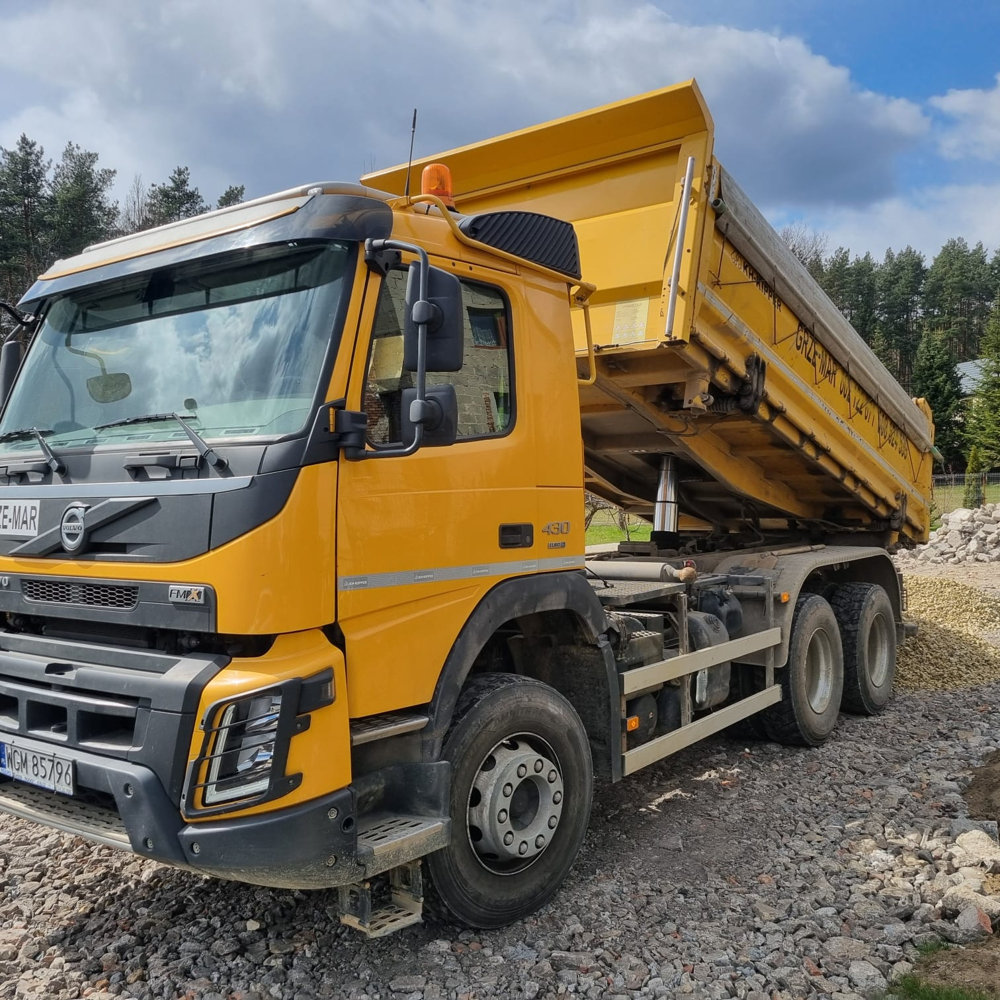
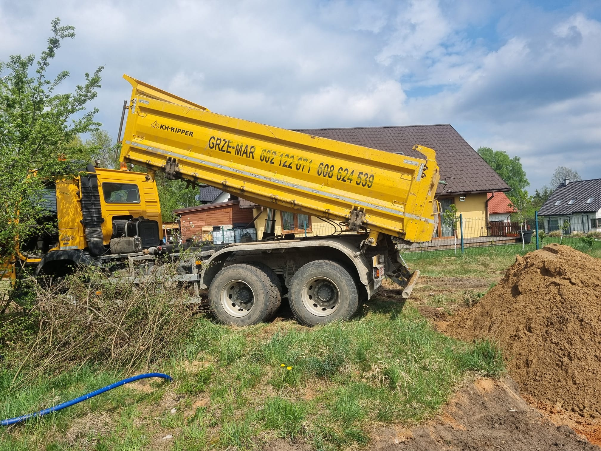
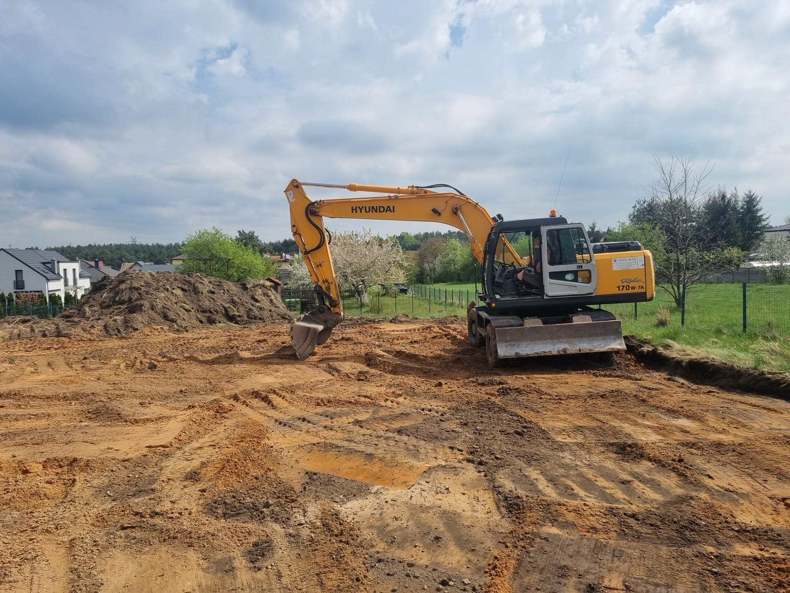
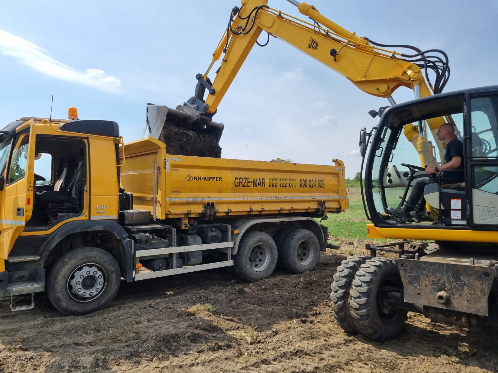

Działamy na rynku już od 1997 roku. W tym czasie zrealizowaliśmy setki zleceń, co świadczy o zaufaniu klientów i ogromnym doświadczeniu. Nasi operatorzy to profesjonaliści w swoim fachu, dzięki temu prace przebiegają szybko, sprawnie i bez zbędnych komplikacji. Oferujemy szeroki zakres usług, więc na pewno znajdziesz u nas to czego szukasz. Każda współpraca wymaga indywidualnej konsultacji - zadzwoń, uzgodnimy szczegóły.




Nasze usługi obejmują między innymi:
- - Usługi koparko-ładowarką
- - Usługi koparką obrotową (17 tonowa, pojemność łyżki 1,1 kubika)
- - Usługi młotem wyburzeniowym
- - Wykopy
- - Wyburzenia
- - Niwelacje terenu
- - Utwardzanie terenu
- - Przygotowanie terenu pod budowę
- - Przesiewanie ziemi
- - Kruszenie betonu
- - Transport materiałów budowlanych sypkich
- - Piasek zasypowy
- - Ziemia ogrodowa, siana